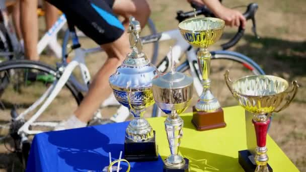

| ПРИВЕТ УЧАСТНИКАМ СОРЕВНОВАНИЙ! | |
| menu |
ФУТБОЛ Футбол (от англ. foot — "нога", ball — "мяч") — это командный вид спорта, в который играют две команды по 11 игроков. Обе стороны стремятся попасть мячом в ворота соперника на противоположном конце прямоугольного поля. Цель игры — забить больше голов, чем соперник. Футболистам не разрешается касаться мяча руками, пока он находится в игре, за исключением вратарей в пределах штрафной площади. Зато можно использовать любую другую часть своего тела, чтобы нанести удар или выполнить передачу, в основном делают это ногами. Команда, которая забьет больше голов к концу игры, становится победителем. Если на счету обеих сторон их одинаковое количество, объявляется ничья или игра переходит в дополнительное время или серию пенальти в зависимости от формата соревнования. |
| ГЛАВНОЕ НЕ ПОБЕДА, А УЧАСТИЕ! | |